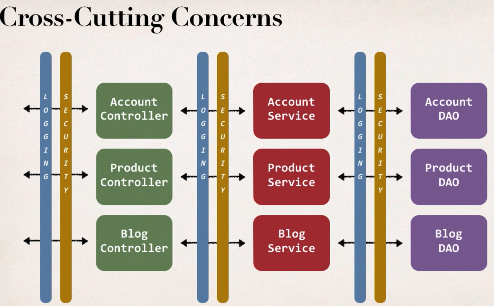

Aspect Oriented Programming (AOP)¶
- This is basic hibernate code as we did before to save an entity:
@Override
public void addAccount(Account theAccount, String userId) {
Session session = sessionFactory.getCurrentSession();
session.save(theAccount);
}
- Now we have some new requirements from the boss, to add some logging.
- Need to log our DAO method
@Override
public void addAccount(Account theAccount, String userId) {
// add logging (println, log4j, etc.)
Session session = sessionFactory.getCurrentSession();
session.save(theAccount);
}
- New requirement comes in:
- Need to add security to our DAO before running the method
@Override
public void addAccount(Account theAccount, String userId) {
// add logging (println, log4j, etc.)
// add security check
Session session = sessionFactory.getCurrentSession();
session.save(theAccount);
}
- New requirement comes in:
- Let's add this to Controller, Service also
...
- New requirement comes in:
- Add this to our entire system
...
Problem statement¶
- Code Tangling: We have logging and security code tangled in that specific business method, which is not good
- Code Scattering: We have to update all classes if changes to logging logic is required
Possible Solution¶
- Inheritance? (no)
- We still would need to go through all our classes and put "extends" in
- What if they already extend from another class -> no multiple inheritance allowed in Java
- Delegation? (no)
- Same as above - need to touch all classes
- Aspect-Oriented Programming (yes)
- An Aspect encapsulates Cross-Cutting Concerns
- An Aspect can be reused at multiple locations, and it's basically just a class

AOP Solution¶
- Apply the Proxy design pattern
- The
Main Appsimply going to make a method-call, it has no idea about ``AOP Proxy - Everything happens behind the scene (like a spy)

Benefits¶
- Code for Aspect is defined in a single class
- Business code is cleaner
- Configurable (Can apply to different parts of app, no need to change main)
Disadvantages¶
- Too many Aspects make app flow hard to follow
- Minor performance cost
AOP Use Cases¶
- Logging, Security, Transaction
- Exception Handling
- API Management
- ...
AOP Terminology¶
- Aspect: Module of code for cross-cutting-concerns (logging, security, ...)
- Advice: What action is taken and when should be applied
- Join Point: When to apply code during program execution
- Pointcut: A predicate expression for where advice should be applied
Advice Types¶
- Before advice: Run before the method
- After finally advice: Run after the method
- After returning advice: Run after the method (on success)
- After throwing advice: Run after the method (on exception)
- Around advice: Run before and after method
Weaving¶
- Connecting aspects to target objects to create an advised object
- Compile-time, load-time, run-time (slowest) weaving
AOP Frameworks¶
- Spring AOP (easier to use, lightweight)
- Only method-level join points
- Uses proxy pattern
- Security, Transactions, Caching
- Uses run-time weaving of aspects
- AspectJ (better for complex requirements)
- Support all join points
- Complete support for AOP
- Compile-time, post-compile, load-time weaving